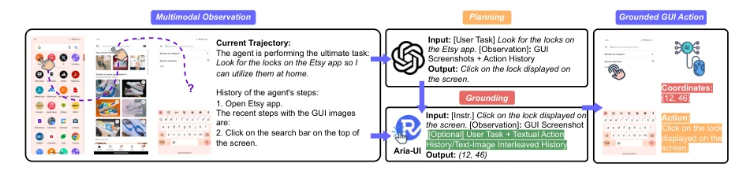
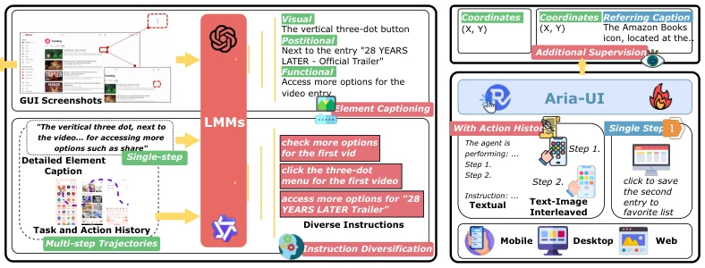

This paper on Aria-UI has served as a potent "pure vision" stimulus for the GUI agent community. Previously, grounding efforts relied heavily on HTML and AXTree, often resulting in adaptation issues on mobile and desktop due to varying developer implementations, and even causing hallucinations. Aria-UI directly overturns the table, relying purely on visual input, supported by super-resolution, which is indeed robust. In terms of data, it conducted a "comprehensive sweep", ranging from Common Crawl to desktop screenshots, with instructions diversified by LLMs; this "data synthesis" strategy is skillfully executed. The experimental results were also commendable, topping the leaderboards on OSWorld and AndroidWorld. However, it lacks planning capabilities itself and still relies on a Planner to feed instructions, functioning as a "visual expert who follows commands". Moreover, some training data is LLM-generated; if the LLM hallucinates, could the model follow suit? In any case, currently the pure vision path appears viable, but it remains one step away from true "autonomy", as it is merely a Grounding module, not an omnipotent Agent. If planning and error correction are integrated in the future, it might truly take over the digital world.
研究动机Motivation
GUI 自动化是数字代理的核心，但“指哪打哪”的 grounding 一直是痛点。现有方法多依赖 HTML 或 AXTree（Accessibility Tree），但这有硬伤：树结构信息缺失导致模型幻觉，且移动端/桌面端 AXTree 质量依赖开发者实现，标准不一（Yang et al., 2023）。此外，Set-of-Mark 等方法虽结合视觉与标签，但灵活性受限，难以适应异构指令（Xie et al., 2024）。更关键的是，现有数据集指令来源单一，缺乏动态上下文，导致模型在长程任务中容易迷失。Aria-UI 旨在解决这些问题，通过纯视觉方案摆脱对辅助输入的依赖，并引入动态行动历史，提升在复杂环境中的鲁棒性。现有模型如 CogAgent 和 UGround 虽有效，但指令多样性不足，且忽视上下文，限制了其在真实场景的泛化能力。
GUI automation is the core of digital agents, but precise "point-and-shoot" grounding has always been a pain point. Existing methods mostly rely on HTML or AXTree (Accessibility Tree), but this has inherent flaws: missing tree structure information leads to model hallucinations, and the quality of mobile/desktop AXTree depends on developer implementation with inconsistent standards (Yang et al., 2023). Additionally, methods such as Set-of-Mark combine vision and labels, but flexibility is limited, making it difficult to adapt to heterogeneous instructions (Xie et al., 2024). More critically, existing dataset instructions have a single source, lacking dynamic context, causing models to easily get lost in long-horizon tasks. Aria-UI aims to address these issues by adopting a pure vision solution to eliminate reliance on auxiliary inputs, and introducing dynamic action history to enhance robustness in complex environments. Existing models such as CogAgent and UGround are effective, but suffer from insufficient instruction diversity and ignore context, limiting their generalization capabilities in real-world scenarios.

Figure 1: The two-stage task performing process for general GUI agents. Aria-UI serves as a robust grounding model to make the planned actions truly happen.
Aria-UI is constructed based on the Aria MoE model, with the core focusing on data and training strategies. Data synthesis is divided into two stages: first, using powerful LMMs (such as GPT-4o) to generate detailed element Captions, combined with screenshots and HTML references; then using LLMs to generate diverse natural language instructions based on Captions, covering Web, Desktop, and Mobile platforms. Specific data sources include public datasets such as Common Crawl, OmniACT, and AMEX, expanding samples through automated pipelines. Secondly, context-aware data is introduced, utilizing trajectory data to construct text or image-text interleaved action histories (Action History), enabling the model to understand dynamic contexts in multi-step tasks. In terms of model architecture, it supports super-resolution (up to 3920x2940), drawing on the NaViT approach to handle Padding to maintain aspect ratios. Training is divided into two stages: first, training basic capabilities with single-step grounding data, then injecting context data to enhance performance in dynamic scenarios to avoid overfitting. During inference, normalized coordinates are output, accepting historical actions as Chat History to achieve dynamic grounding.

Figure 2: The overall data and training pipeline for Aria-UI.
Evaluation covers ScreenSpot, AndroidControl, GUI-Odyssey, Multimodal-Mind2Web, AndroidWorld, and OSWorld. Baselines include UGround, SeeClick, CogAgent, and GPT-4o, etc. Metrics include element accuracy and task success rate. Aria-UI achieved an average accuracy of 82.4% on ScreenSpot, significantly outperforming UGround. Under zero-shot settings, Aria-UITH achieved a task success rate of 66.30% on AndroidControl and 15.15% on OSWorld. Ablation studies show that super-resolution and diverse instructions are crucial for performance; after removal, average accuracy dropped to 61.1%. Context enhancement (TH/IH) shows significant improvement in dynamic environments, improving by 12.8% over baselines on AndroidWorld. Especially Aria-UIIH performed strongest in cross-website tasks, proving multimodal historical input is effective.